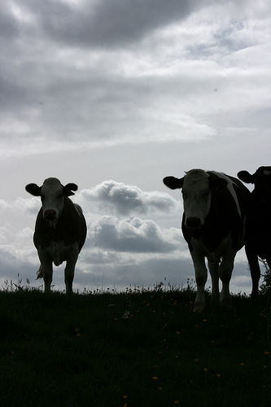

Saturday, September the 5th, 2009
back to: title, date or indexes
Would that Alfred Hitchcock were with us now! It is time, surely, for a new version of The Birds called The Cows. First they attacked David Blunkett, which is understandable, but now they have killed a holidaying veterinary surgeon. Is there not authentic Hitchcockian menace in this report?
around lunchtime they heard “an unusual bellow”
“I looked out of the window and saw the lady in question stood up against the wall, she had a stick and was shaking it, trying to get the cows away.”
Mrs Johnson said she could see the cows “all stood, huddled together in an arch”
Crowsley's body was found leaning against a stone wall and a semi-circle of cows close by.

Photo by Quilted